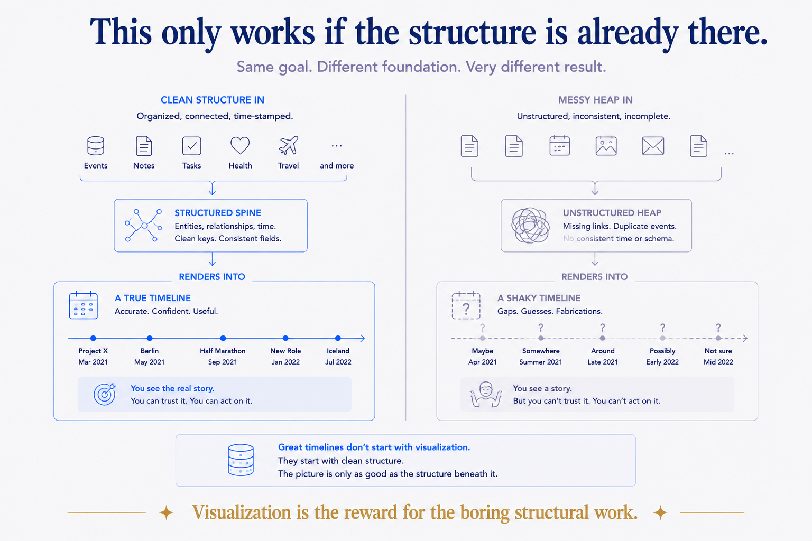
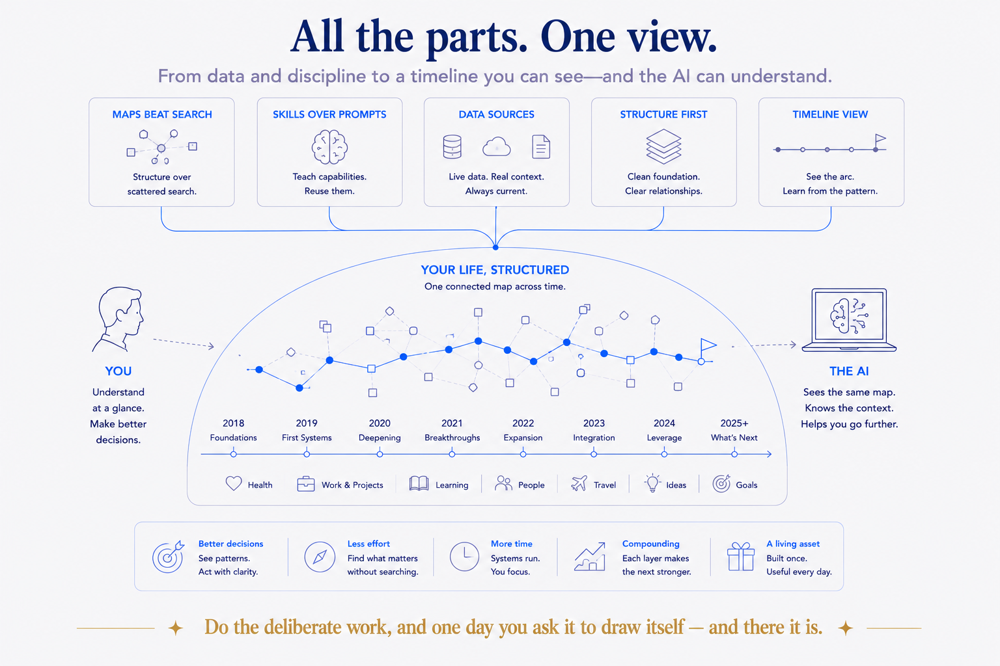

Structure you can query vs structure you can see
I've spent a lot of words in this series arguing that structure is what makes your data useful — queryable, retrievable, alive. And it's true. But there's a gap between useful and felt, and I walked into it recently.
I asked my system a simple question: what did my last two years actually look like? And I got back exactly what a structured system should give you — a correct, complete list. Trips, decisions, projects, moves, milestones, all in order. Accurate. And somehow flat. A list of forty things that happened is information, but it isn't a shape. You can't see the busy stretch, the quiet gap, the year everything clustered.
So I changed one word in the request. Instead of "list," I said "draw." Visualize it. And the same data — no new information, not one extra fact — became a timeline I could take in at a glance. The clusters were obvious. The gaps were obvious. The story was suddenly visible. That's the difference between structure you query and structure you see, and it turns out the second one is where the meaning lands.
Why this only works if the structure is already there
Here's the part that connects it to everything else: you can only visualize what's already structured. The reason Claude could draw my timeline in one pass is that the underlying data was already deliberate — every dated thing sitting on the calendar spine, typed, with properties, in a predictable shape. The visualization wasn't magic. It was reading a structure that was built to be read.
If your life-data is a heap — scattered notes, vague filenames, dates buried in prose — asking an AI to "draw my timeline" gets you a shrug or a fabrication, because there's nothing clean to draw from. The picture is only as good as the structure beneath it. Visualization is the reward for having done the boring structural work, not a substitute for it. Which is, again, the whole thesis: the magic isn't the chart. It's the shape underneath that made the chart possible.

Show the machinery: what "draw it" actually produces
You don't need a data-viz tool or a design skill for this. The trick is that a language model can write the diagram, in text, and let a renderer draw it. A few forms I actually reach for:
- A Mermaid timeline or Gantt. Claude emits a few lines of Mermaid text — periods, events, durations — and any Markdown tool (or the vault itself) renders it as an actual timeline. Text in, picture out. Version-controllable, editable, no binary file.
- An SVG or HTML timeline for something richer — a life-in-weeks grid, a trips-across-a-decade band, a this-year-at-a-glance. The model writes the SVG; the browser draws it. Self-contained, shareable.
- A per-period theme chart. Because the calendar spine already rolls up into weeks, months, quarters, years, you can ask for a visual of themes over time — what dominated Q1 vs Q3 — not just events. The rollups feed the picture.
The move in every case is the same: the AI turns your structured data into the description of a visual, and a renderer turns that into the visual. You're not drawing; you're directing the drawing — which is exactly the posture this whole approach is built on.
The Living Timeline, made literal
Earlier in this arc I described the calendar spine as a Living Timeline — not an archive where dated things rest, but a spine that keeps re-summarizing itself as new inputs land. Visualization is where that idea stops being a metaphor and becomes a thing on screen.
Import your AI chat history onto the spine (as I did with 2,799 conversations) and it becomes dots on the timeline. Enrich your daily notes from twenty data sources and the busy months look busy. Ask for the year as a picture and you see where the trips clustered, when the quiet stretches fell, which quarter carried the big decisions. The same structure that answers "what happened in Q2" as a list can now show you Q2 as a shape. The timeline was always alive; visualization is how you finally watch it move.
And because it's generated, it's never stale. New data lands, you ask again, the picture redraws. It's not a chart you made once and forgot — it's a live view onto a living structure.
The honest caveat
Two, actually. A picture can lie more convincingly than a list — a clean timeline feels authoritative even if the data behind it has gaps, so the discipline of trusting the structure (not the pretty output) matters more, not less, once things look polished. And the visual is a view, not the source — the source of truth stays the structured data in the vault; the picture is a generated, disposable lens you regenerate on demand. Never start editing the chart as if it were the record. Draw it, read it, throw it away, draw it again tomorrow.
The five-minute reward, and the years behind it
The move itself is simple, and I'll hand it over: structure your dated life on one spine, then ask the AI to draw it, not list it — Mermaid for quick, SVG or HTML for rich, and let the rollups feed a themes-over-time view. If your data's already structured, you can have a real picture of your life in the next five minutes.
But sit with the asymmetry, because it's the point this whole series has been building to. The chart is a five-minute reward. The thing that makes the chart true instead of fabricated took years — a spine everything hangs on, typed and clean and complete enough that a single "visualize this" returns your actual life instead of a plausible lie. Every piece of this series was really about that structure underneath: tags versus it, maps over it, skills that stand on it, data sources that feed it, a job that applies it. The visualization is just the moment it all becomes visible at once.
So here's where the series lands. You don't build structure to get a pretty timeline. You build it so that your knowledge, your data, your life becomes something an AI can genuinely see and act on — and the timeline is simply the first time you get to see it too. Do the boring, deliberate work of giving your world a shape, and one day you ask it to draw itself, and there it is: everything you've been building all along, finally in view.
